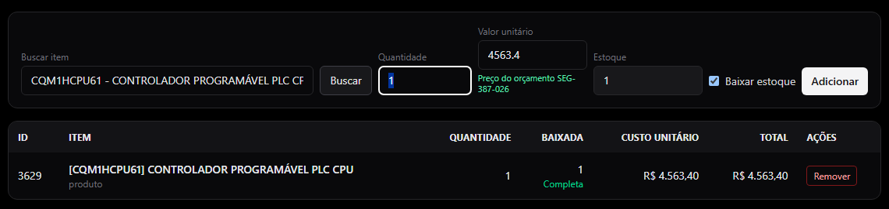
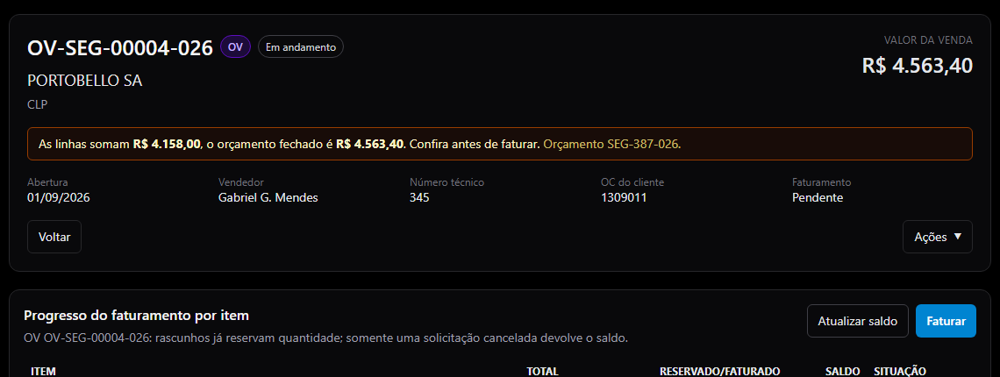
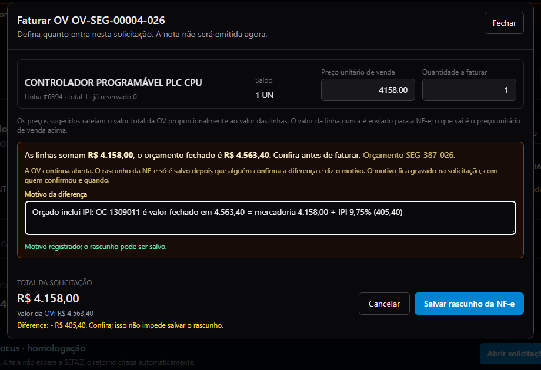
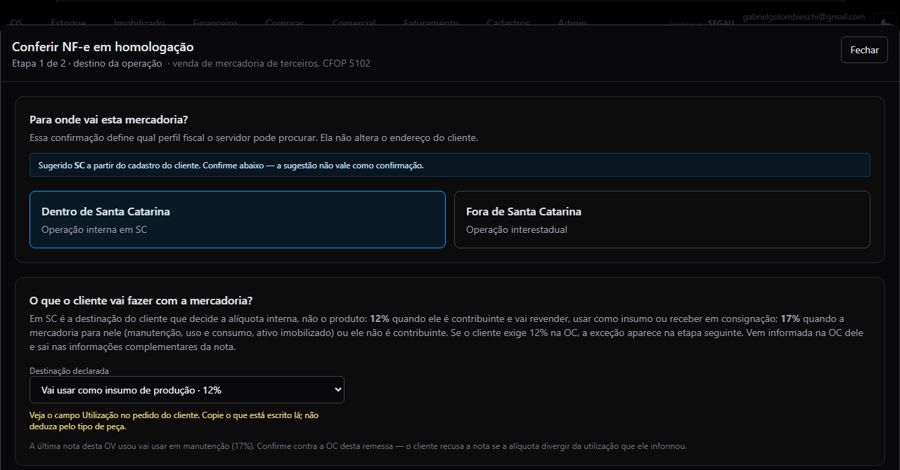
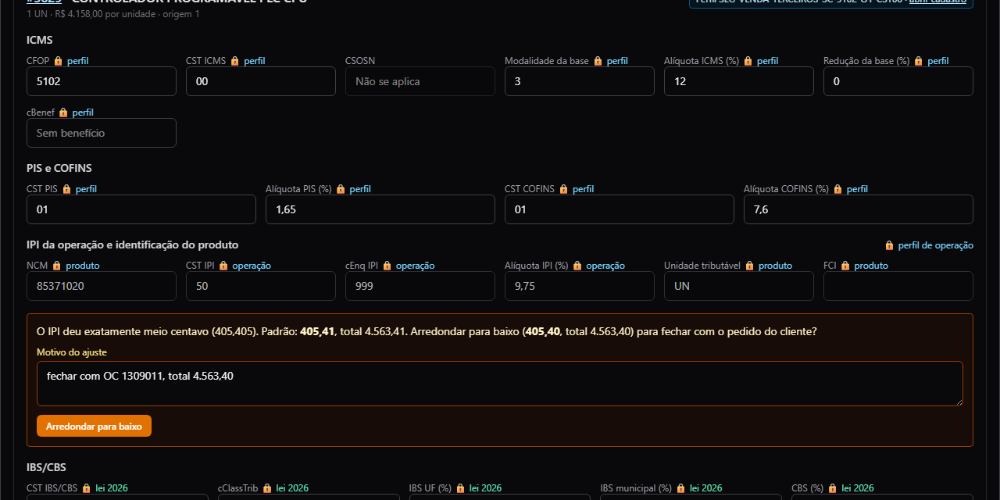
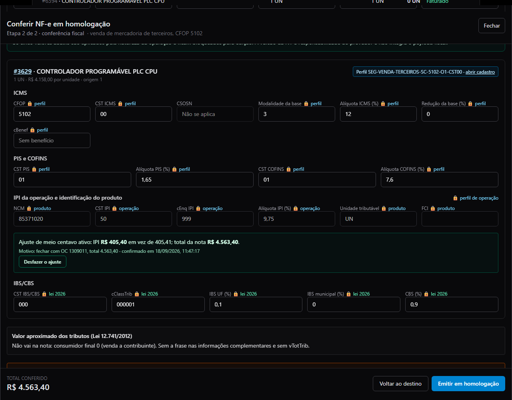
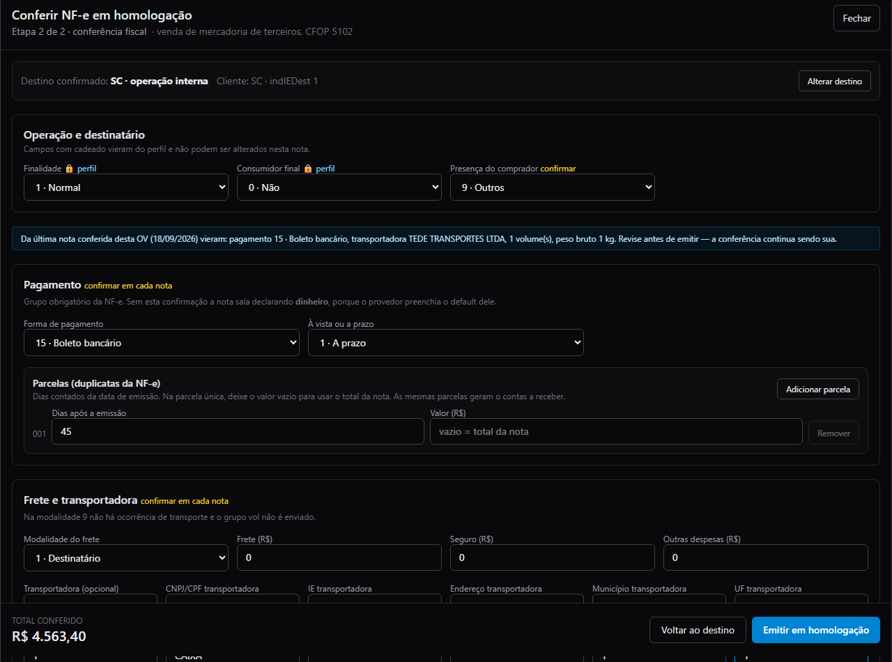
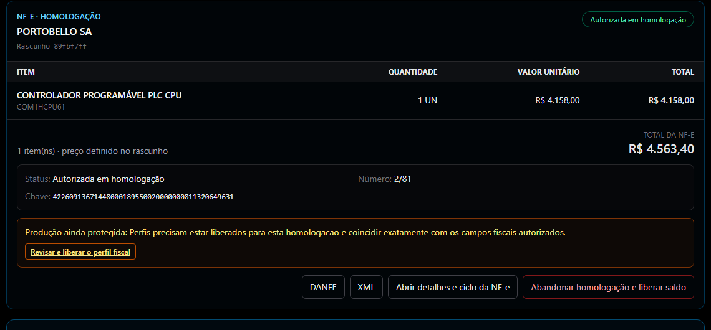
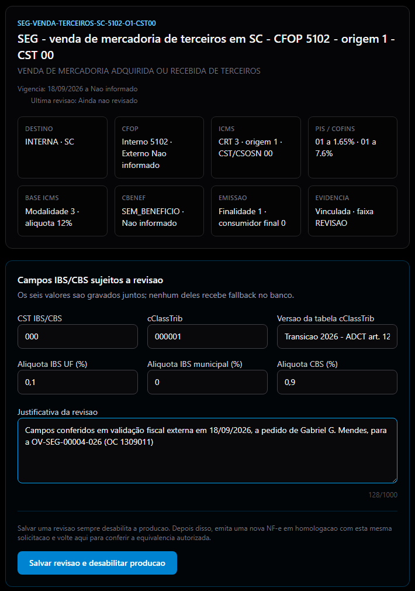
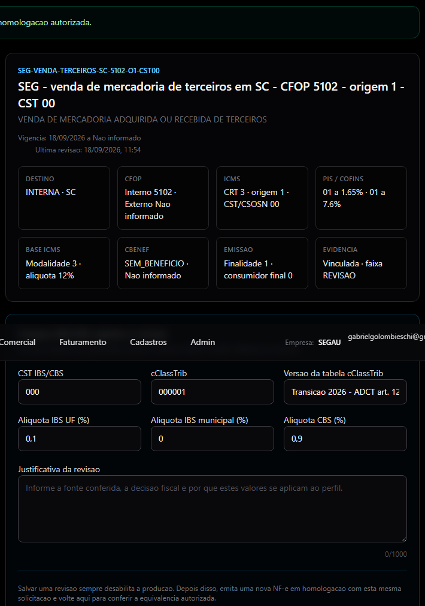

Onde: Comercial › Vendas › a OV › aba Faturamento. Revisado em 18/09/2026 com as telas da OV-SEG-00004-026 (Portobello, CPU de CLP OMRON CQM1H-CPU61 importada pela Segau; ensaio NF-e 2/81 autorizado em homologação). Quem faz: qualquer pessoa com perfil FATURAMENTO, FINANCEIRO ou ADMIN na empresa SEGAU. A emissão real depende de uma liberação do responsável fiscal (capítulo 7).
| Caso de referência | Dados |
|---|---|
| Venda | OV-SEG-00004-026 · PORTOBELLO SA (PBG S/A, Tijucas/SC, contribuinte) · orçamento SEG-387-026 · OC 1309011 |
| Peça | CQM1HCPU61 · CONTROLADOR PROGRAMÁVEL PLC CPU · NCM 8537.10.20 · importada pela Segau (DIR 260191366846, NF-e de entrada 2/24) |
| OC do cliente | Valor fechado R$ 4.563,40 já com o IPI · Utilização: "Aquisição de Mercadoria Insumos" |
| Nota | Mercadoria 4.158,00 + IPI 9,75% (405,40) = 4.563,40 · ICMS 12% sobre 4.158,00 · CFOP 5102 · origem 1 |
| Ensaio (homologação) | NF-e 2/81 · 18/09/2026 11:55 · autorizada (sem valor fiscal) · chave 42260913671448000189550020000000811320649631 · protocolo 342260000955033 |
| Nota real (produção) | Ainda não emitida: depende de liberar o perfil (capítulo 7) |
Quando a peça vendida foi importada pela própria Segau (a DIR/DI está no nosso CNPJ). Nesse caso a Segau é "equiparada a industrial" e a nota de venda destaca IPI mesmo sendo revenda. A peça aparece no cadastro do item, aba fiscal, com origem 1 e a marca Importado por nós. Se a peça foi comprada de um distribuidor no Brasil, este manual não se aplica: a origem é 2 e a nota sai sem IPI.
Duas coisas mudam em relação a uma venda comum: o preço da linha e a conta do IPI. Quando a OC do cliente é valor fechado (o total já inclui o IPI), a linha da OV precisa ser a mercadoria sem o IPI, para a nota fechar no valor da OC.
A destinação da nota vem do campo Utilização da OC do cliente. Copie o que está escrito lá. Não deduza pelo tipo de peça.
| Utilização escrita na OC | Opção na tela ("O que o cliente vai fazer com a mercadoria?") | Efeito |
|---|---|---|
| Insumos | Vai usar como peça/insumo na produção dele | ICMS 12% · IPI fora da base do ICMS |
| Revenda | Vai revender | ICMS 12% · IPI fora da base |
| Consignado | Recebe em consignação | ICMS 12% · IPI fora da base |
| Manutenção | Vai usar na manutenção | 17% pela regra; 12% só com a exceção da OC (etapa seguinte) · IPI dentro da base |
| Uso e consumo | Uso e consumo | ICMS 17% · IPI dentro da base |
| Ativo imobilizado | Vai virar equipamento/patrimônio dele (ativo) | ICMS 17% · IPI dentro da base |
"IPI fora da base" quer dizer: o ICMS é calculado só sobre a mercadoria (4.158,00 × 12% = 498,96). "Dentro da base": o ICMS é calculado sobre mercadoria + IPI. O sistema faz a conta; o que você escolhe é a destinação, copiada da OC.
Passo 1 Conferir o preço da linha da OV. Na aba Itens da OV, ao incluir a peça, o campo Valor unitário já vem com o preço do orçamento (legenda verde "Preço do orçamento SEG-xxx-026"). Se a OC for valor fechado com IPI, a linha tem de ser a mercadoria sem o IPI: divida o total da OC por 1,0975 (IPI de 9,75%). Ex.: 4.563,40 ÷ 1,0975 = 4.158,00. Confira a alíquota de IPI do item na aba fiscal do cadastro.

Aba Itens: o valor unitário vem do orçamento, com a legenda "Preço do orçamento SEG-387-026".
Quando as linhas não somam o valor da OV, o cabeçalho mostra o aviso "As linhas somam R$ X, o orçamento fechado é R$ Y. Confira antes de faturar." Neste caso ele é esperado: o orçado inclui o IPI e a linha não. A OV continua aberta.

Cabeçalho da OV com o aviso: linhas 4.158,00 × orçado 4.563,40.
Passo 2 Criar o rascunho da NF-e. Aba Faturamento › botão Faturar. Preço unitário de venda = o da linha (4.158,00), quantidade = o saldo. Como as linhas diferem do orçado, aparece o quadro laranja pedindo o motivo da diferença (15 caracteres ou mais). Escreva: "Orçado inclui IPI: OC 1309011 é valor fechado em 4.563,40 = mercadoria 4.158,00 + IPI 9,75%" (troque a OC e os valores). Clique em Salvar rascunho da NF-e. Nada é emitido ainda.

Modal Faturar OV: preço 4.158,00 e o motivo da diferença preenchido.
Passo 3 Destino e destinação. No cartão do rascunho, clique em Conferir e emitir em homologação. Etapa 1: Dentro de Santa Catarina (o sistema sugere pela UF do cliente; confirmar é seu clique). Em Destinação declarada, escolha a opção que corresponde ao campo Utilização da OC, pela tabela do capítulo 3. Na Portobello com "Insumos": Vai usar como peça/insumo na produção dele · 12%. Clique em Continuar para conferência fiscal.

Etapa 1: Dentro de Santa Catarina e destinação "Vai usar como peça/insumo na produção dele · 12%", com a legenda "Veja o campo Utilização no pedido do cliente".
Passo 4 Conferência fiscal: o aviso do meio centavo. O sistema resolve o perfil fiscal (Perfil SEG-VENDA-TERCEIROS-SC-5102-O1-CST00) e preenche CFOP 5102, CST 00 a 12%, IPI CST 50 a 9,75%. Se o IPI da linha cair exatamente em meio centavo (4.158,00 × 9,75% = 405,405), aparece o quadro laranja: "O IPI deu exatamente meio centavo (405,405). Padrão: 405,41, total 4.563,41. Arredondar para baixo (405,40, total 4.563,40) para fechar com o pedido do cliente?" Quando o total da OC é 4.563,40, escreva o motivo ("fechar com OC 1309011, total 4.563,40") e clique em Arredondar para baixo. O quadro fica verde com o valor, o motivo e a data, e o Total conferido passa a 4.563,40. Se o aviso não aparecer, é porque não há empate: siga em frente.

Aviso do meio centavo na linha, com o campo de motivo e o botão Arredondar para baixo.

Ajuste ativo: IPI 405,40 em vez de 405,41; total da nota 4.563,40; Desfazer o ajuste disponível.
Use o ajuste só para fechar com o pedido do cliente. Ele muda no máximo R$ 0,01 e fica registrado (motivo, quem, quando). Fora do empate exato o sistema recusa. Se a linha mudar depois, o quadro fica vermelho: desfaça e confirme de novo.
Passo 5 Pagamento, frete e emitir o ensaio. Ainda na conferência: Presença do comprador 9; Forma de pagamento 15 · Boleto, indicador 1 · A prazo, parcela 1 com os dias da OC (45) e valor em branco (= total); Modalidade do frete 1 · Destinatário, transportadora (TEDE TRANSPORTES LTDA, CNPJ 02.484.555/0010-72, R. Gustavo Henschel, Blumenau/SC), frete/seguro/outras 0, 1 volume, espécie CAIXA, pesos. Confira o Total conferido = total da OC. Clique em Emitir em homologação.

Conferência preenchida: boleto a prazo em 45 dias, frete 1 · Destinatário, total conferido 4.563,40 e o botão Emitir em homologação.
Homologação é um ensaio: a nota vai para o ambiente de teste da SEFAZ e não tem valor fiscal. Serve para conferir a nota inteira antes da emissão real.
Passo 6 Esperar a resposta e conferir a nota. A resposta chega sozinha. O cartão passa a Autorizada em homologação com o número (2/81), a chave e os botões DANFE, XML e Abrir detalhes e ciclo da NF-e. Confira na DANFE, antes de qualquer coisa, o quadro do capítulo 5. Se aparecer REJEITADA, abra o ciclo para ler o motivo e chame o responsável fiscal.

Cartão do rascunho autorizado em homologação: NF-e 2/81, total 4.563,40 e o link "Revisar e liberar o perfil fiscal".
Tudo abaixo vem do sistema. Ninguém digita imposto. Se a DANFE mostrar algo diferente, chame o responsável fiscal antes de emitir a real.
| Campo | Valor na 2/81 | Como conferir |
|---|---|---|
| Natureza / CFOP | VENDA MERCADORIA ADQ. REC. DE TERCEIROS / 5102 | Venda de mercadoria de terceiros dentro de SC |
| Item | CQM1HCPU61 · NCM 8537.10.20 · 1 UN × 4.158,00 · origem 1 | Origem 1 = importação direta (a peça é nossa importação) |
| ICMS | CST 00 · base 4.158,00 · 12% · 498,96 | Insumo/revenda: a base é só a mercadoria |
| IPI | CST 50 · 9,75% · 405,40 | Com o ajuste do meio centavo; sem ele seria 405,41 |
| PIS / COFINS | 01 · base 3.659,04 · 60,37 / 278,09 | Base = mercadoria menos o ICMS |
| IBS / CBS | 000 / 000001 · base 3.320,58 · 3,32 / 29,89 | Transição 2026; sem valor a pagar |
| Consumidor final / xPed | indFinal 0 · pedido 1309011 | Contribuinte que vai usar na produção; a OC vai no pedido |
| Total da nota | 4.563,40 = total da OC | Mercadoria 4.158,00 + IPI 405,40. Se não bater com a OC, pare |
| Cobrança | Boleto (15), a prazo, 1 parcela 001 · 02/11/2026 · 4.563,40 | 45 dias da emissão |
| Frete | 1 · Destinatário · TEDE TRANSPORTES LTDA · 1 volume · 1,000 kg | Como na OC |
| Informações complementares | "Destinação informada pelo destinatário: insumo de produção. Alíquota interna de ICMS de 12% - operação destinada a contribuinte do imposto - Lei 10.297/96, art. 19, III, \"n\", e Lei 17.878/2019 | Pedido de compra do cliente: 1309011" | Sem texto de exceção: insumo já é 12% pela regra |
| O que aparece | O que fazer |
|---|---|
| "As linhas somam R$ X, o orçamento fechado é R$ Y. Confira antes de faturar." | Esperado quando a OC inclui o IPI e a linha é a mercadoria. Escreva o motivo no rascunho. Se não for esse o caso, corrija a linha na aba Itens. |
| "Escreva o motivo da diferença" / botão Salvar rascunho travado | O motivo precisa de 15 caracteres ou mais. |
| "origem 1 sem a marca de equiparado a industrial" | A peça está com origem 1 mas sem a marca Importado por nós. Responsável fiscal: Cadastros › Itens › aba Fiscal › Importado por nós (DIR e nota de entrada). |
| "revenda em CFOP 5102 não destaca IPI" | A peça tem IPI no cadastro mas não está marcada como importada por nós. Se foi comprada no Brasil, a origem deve ser 2 e o IPI 53. Responsável fiscal. |
| Aviso do meio centavo | Só quando o IPI cai em empate exato. Arredonde para baixo apenas para fechar com a OC; caso contrário, ignore e emita. |
| "o ajuste de meio centavo está marcado mas o IPI não cai em empate" | A linha mudou depois da confirmação. Clique em Desfazer o ajuste e, se ainda houver empate, confirme de novo. |
| "destinação manutenção exige alíquota interna de 17%" | A OC diz manutenção e o cliente exige 12%: use a exceção da OC (quadro "ICMS 12% por exigência do destinatário", com o número da OC e a evidência). Se a OC diz Insumos, troque a destinação: não é manutenção. |
| Perfil fiscal pendente / "Emissão bloqueada até existir um perfil fiscal válido" | O perfil da operação (origem 1, 5102) não existe ou não cobre esta destinação. Responsável fiscal. |
| Ensaio REJEITADA | Ciclo de vida › ler o motivo › responsável fiscal. Não tente de novo sem saber o motivo. |
| Total da nota diferente do total da OC | Pare. Confira o preço da linha (capítulo 4, passo 1), a destinação e o ajuste do meio centavo. Se persistir, responsável fiscal. |
A nota real só sai depois que o perfil fiscal usado no ensaio for revisado e liberado para esta homologação. A revisão do SEG-VENDA-TERCEIROS-SC-5102-O1-CST00 foi salva em 18/09/2026 11:54 (justificativa: campos conferidos em validação fiscal externa a pedido de Gabriel G. Mendes). Falta a liberação, que é decisão do Gabriel. Cliques exatos:

Tela de perfis: campos do SEG-VENDA-TERCEIROS-SC-5102-O1-CST00 e a justificativa da revisão preenchida (só o responsável fiscal).

Revisão salva (Última revisão 18/09/2026, 11:54). A produção fica desabilitada até a liberação por homologação.
Por que essa etapa existe: a liberação vale só para esta nota. Cada venda nova de peça importada passa por ensaio + liberação de novo. É o controle que impede uma nota real sair diferente do que foi conferido.
| Etapa | Quando | Referência |
|---|---|---|
| Preço da linha | 18/09/2026 | os_itens 6394: 4.563,40 → 4.158,00 (OC 1309011 valor fechado com IPI); migration 20260918250000 |
| Homologação anterior abandonada | 18/09/2026 11:39 | NF-e 2/73 (manutenção + exceção 12%), solicitação b054ba1c; saldo devolvido |
| Rascunho novo | 18/09/2026 11:40 | Solicitação 89fbf7ff · motivo da diferença gravado (orçado inclui IPI) |
| Ajuste de meio centavo | 18/09/2026 11:47 | IPI 405,405 → 405,40 · motivo "fechar com OC 1309011, total 4.563,40" |
| Revisão do perfil | 18/09/2026 11:54 | SEG-VENDA-TERCEIROS-SC-5102-O1-CST00 · validação fiscal externa a pedido de Gabriel G. Mendes |
| Ensaio (homologação) | 18/09/2026 11:55 | NF-e 2/81 · protocolo 342260000955033 · chave 42260913671448000189550020000000811320649631 |
| Liberação e nota real | — | Pendentes (capítulo 7) |
| Arquivos | — | XML da 2/81 em docs/faturamento/vender-peca-importada-manual/ (repositório) e nos botões do cartão |